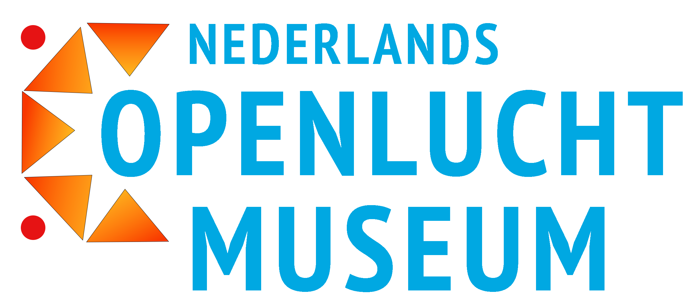

Kom gezellig het verleden verkennen in het Nederlands Openluchtmuseum net buiten Arnhem. Ons park bestaat uit 44 hectare grond, hier staan bijzondere en historische gebouwen. Ieder gebouw heeft een geschiedenis en een interessante verhaal. Praat met ambachtslieden, eet een vers broodje bij het bakkertje. Of pak de oude tram door het park. Dwaal een dag door wijken, geniet van het zelfgebrouwen bier, van de poffertjeskraam, of de tuinen.